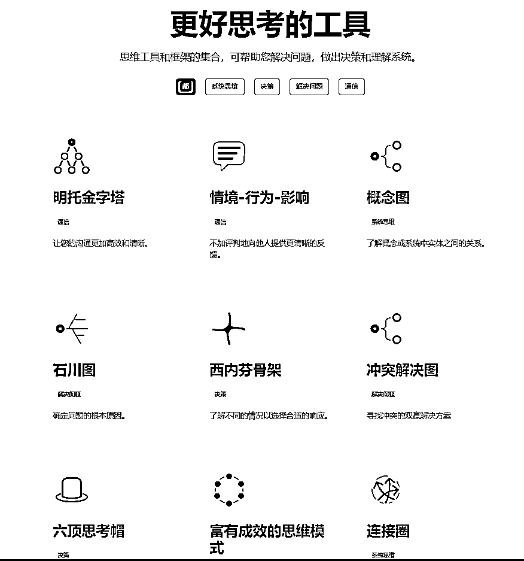
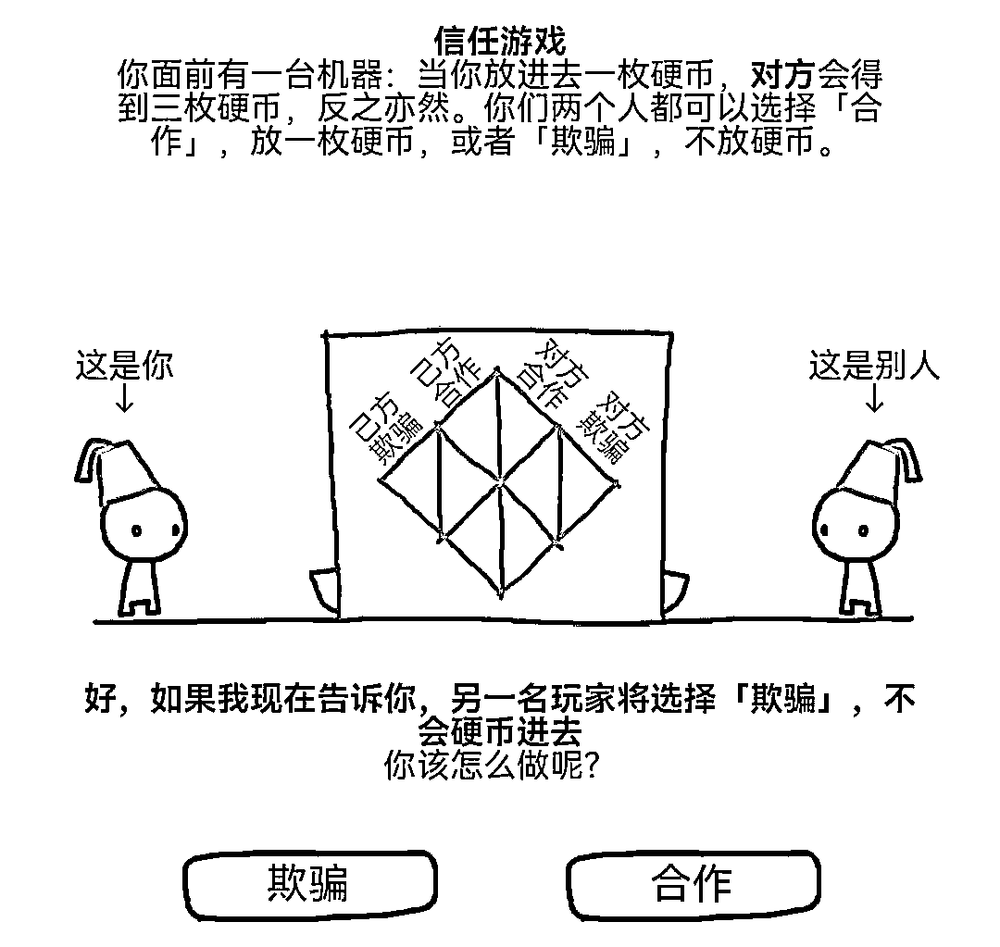

来源：https://igk43cq0a6.feishu.cn/docx/FYXPdp8TqogPToxsOYbcmhmFnVb
如何提高创业成功率，如何提高投资收益，如何防被割韭菜，甚至找到一个好的生活伴侣的关键往往归结于一个单一的强大概念： "提高认知能力"。
本文是教大家如何“科学变聪明”或“提高认知”。
“投资是认知的变现”大家都听过，作为一个深耕投资领域多年的人，这句话太重要了，我也一直关注“提升认知”这个话题。
最近两年，有两位大师在这两年，非常科学地提出如何“提高认知”/“变聪明”。一个史蒂芬平克（语言学家、认知科学家），另一个是心理学家斯坦诺维奇（Keith E. Stanovich）（研究领域是推理心理学和阅读心理学）。
可以说，终于有了“系统提高认知”的方法
聪明的人，涉及两个方向：“高智商”和“高认知”
智商极难改变，但认知就很容易提高。
提高认知，需要知道两个词：理性和理商
有人问查理芒格，如果只能永一个词总结他的成功，是什么？他说是“理性”。
但很多人把理性（rationality）定义为“有理由”（having reason），语言学家、认知科学家史蒂芬平克的定义理性，是“利用知识实现目标的能力。”
斯坦诺维奇（Keith E. Stanovich）提出的理性思维，是一个超越传统智力概念的概念。斯坦诺维奇认为，智力主要侧重于认知能力，如解决问题和记忆，而理性思维包括批判性思维、逻辑推理和决策技能。
理商（RQ）是一种测量人的理性程度的方法
斯坦诺维奇广泛地研究了可能阻碍理性决策的认知偏见和启发式方法。他创造了 "理性障碍 "一词来描述理性思维技能方面的缺陷，类似于阅读障碍指的是阅读方面的困难。他的研究强调了理智障碍在各种情况下的普遍性，包括财务决策和信仰形成。通过揭示这些认知偏见，斯坦诺维奇的工作对改善决策过程和促进日常生活中的理性有实际意义。
史蒂芬平克和斯坦诺维奇都对理性有研究，我归纳了他们对于如何提高理性的方法：
案例：某一个老板介绍一个“技术项目”，说如果成功有丰厚的回报。各种推广、背书，然后你要投资，你怎样思考？
查这个领域的历史数据，看看成功率是多少。回报是否合理，假如该领域市场回报平均年化20%，他给的回报是年化80%，这就值得怀疑。
独立评估信息可靠性，而不是只听老板介绍。例如自己去考察团队背景，查看团队在相关领域的成功率。
为什么高回报的好项目会给一个陌生人（问清楚原因）
很多人喜欢看收益，但不知道收益背后冒的风险。投资和创业都是风险与回报的游戏，我们要对潜在的风险和可能的回报进行全面评估。
案例：某大V宣传1天能获得100%收益。但它不告诉你其实就是去赌场赌一把。
有2个隐秘的地方
①这个赌场很隐秘，可能是股票市场，可能是币圈。
②有时候作者都不知道自己在赌，以为是能力。就像赌大小桌上，很多人用笔和纸记录了很多“开大小”的数据，得出的“结论”赢钱。
理解风险与回报评估的原则，就能改善认知能力呢？因为它能培养你的严谨思维和决策能力。人类往往习惯朝一个方向进行思考，而风险与回报的评估却能让你从多个角度去权衡问题。它强调了「可能性」、「机会成本」与「预期收益」的重要性，让你在做决策时能避免「过度乐观」、「风险厌恶」、「短视行为」等认知偏差。一旦养成「风险与回报评估」的习惯，你就可排除很多不理智的决策。
很多成功，和原因完全没关系。
这个在投资场上最重要。分析企业头头是道，可能只是大牛市，所有股票都上涨。
掌握「变量之间的关系」与「控制混淆因素」，避免「偶然关联误解为因果」，这样知其然知其所以然才能做更好的决策。

#小程序://信任的进化/3Eyuar00sEYEs8u

初阶：
基思·斯坦诺维奇（Keith E. Stanovich） 《这才是心理学》（第11版）
《理商：如何评估理性思维》
史蒂芬·平克（Steven Pinker）的《理性》
《批判性思维工具（原书第3版）》
系统学习：
强烈推荐这本国外教材：The Art of Reasoning
如果你想过要变得更聪明，或者不被生活中的各种陷阱所欺骗，那么本文正是你所需要的。
提高认知，相比智商，理商或理性是可以通过科学的方法得到提升的。但这是一个持续的过程，而不是一蹴而就，但好处是，它给了我们一个方向，真的是只要开始，就能感受到聪明了点，哈哈。